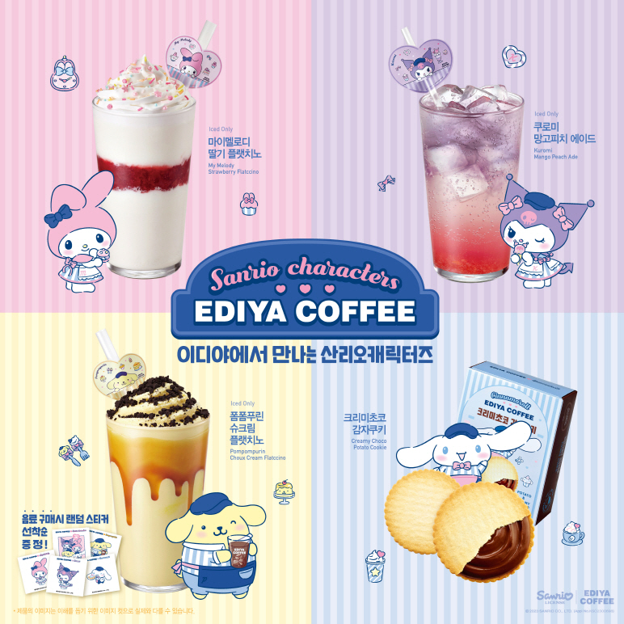

Ediya Coffee:
Sanrio Collaboration Campaign

Scope / Context: Integrated marketing proposal leveraging Ediya's high-profile Sanrio collaboration to drive Gen Z brand engagement. Strategy / Role: Bridged physical café touchpoints with social media through 3 targeted campaign activations (POV Reels, 3D Photo Zones, and O2O). Impact / Reach: Developed multi-channel promotion concepts, customer experience flows, and social activation strategies.
View Project →